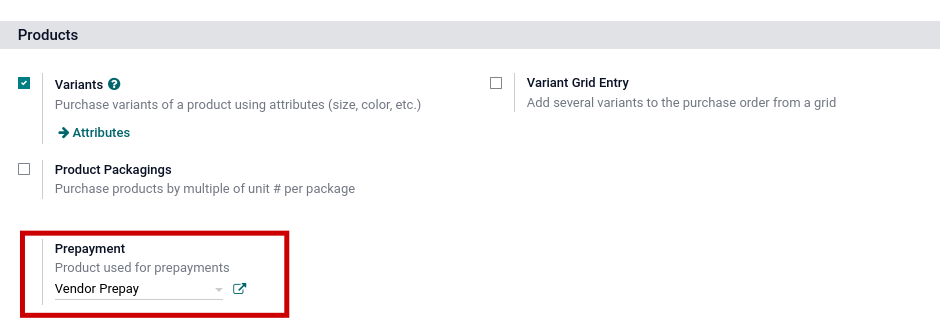
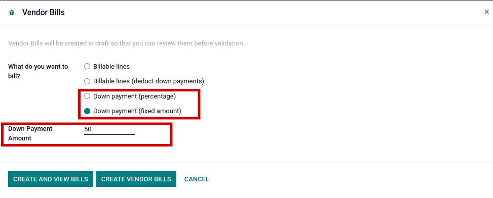
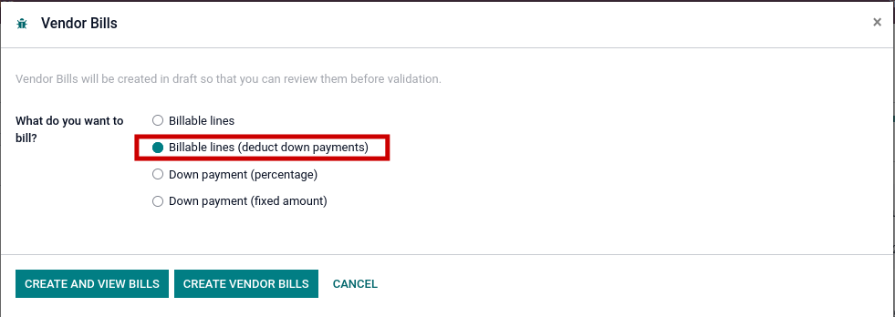
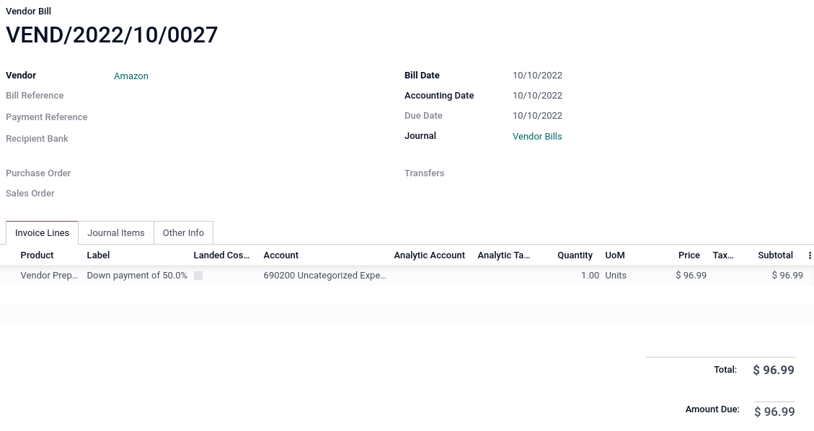
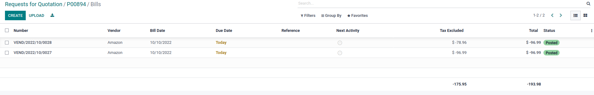

<section class="container">
    <div class="row">
        <div class="col-md-offset-1 col-md-8 mb64 mt64">
            <div>
                <h1 class="display-4">Purchase Order Prepayments (down payment)</h1><br/>
				<h2>Description</h2>
				Allows a user to register prepayments (down payments) against purchase orders and apply prepayments (down payments) to final bill from vendor.
            </div><br/>
			<div>
				<h2>Configuration</h2>
				Settings -> Purchase -> Prepayment<br/><br/>
				<li>Create a Prepayment Product</li>
				<li>Set Expense account on product in the accounting tab</li>
				<li>On the Purchase tab, set the product to "Ordered Quantities"</li>
				<li>Product Type = Service</li>
				<div class="oe_mb32 oe_demo oe_picture oe_screenshot">
					
				</div>
			</div>
            

			<div>
				<h2>Functionality</h2>
				After validating a purchase order, use the Create Bill -> Down payment (percentage) or Down payment (fixed amount) to generate a bill. Multiple Prepayments (Down payments) can be made on one purchase order.<br/><br/>

				<div class="oe_mb32 oe_demo oe_picture oe_screenshot">
					
				</div>

				<div class="oe_mb32 oe_demo oe_picture oe_screenshot">
					
				</div>
				
				When creating the final bill, use the Billable lines (deduct down payments) option to apply the prepayment (down payment) to the final bill.<br/>
				<div class="oe_mb32 oe_demo oe_picture oe_screenshot">
					
				</div>
				<div class="oe_mb32 oe_demo oe_picture oe_screenshot">
					
				</div>
			</div>
<br/>
			<div>
				<h2>Credits</h2>
				<h4>Contributors</h4>
				<li>Sodexis &lt;<a href="mailto:apps@sodexis.com">apps@sodexis.com</a>&gt;</li><br/>
				This module is maintained by Sodexis.<br/>
			</div>

        </div>
    </div>
</section>
